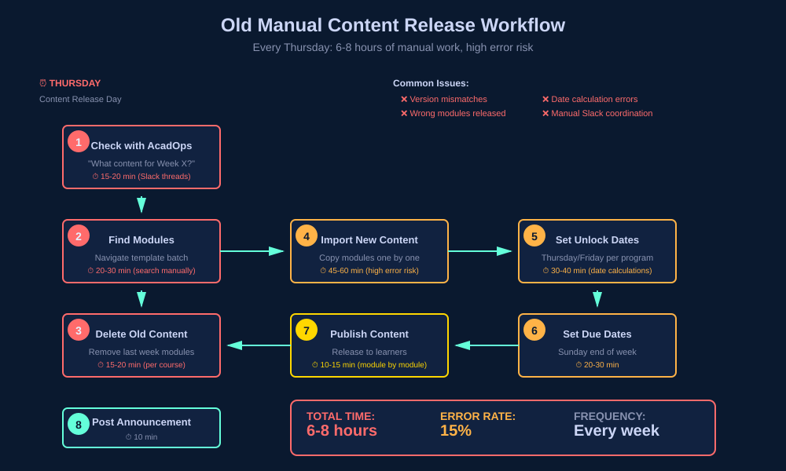
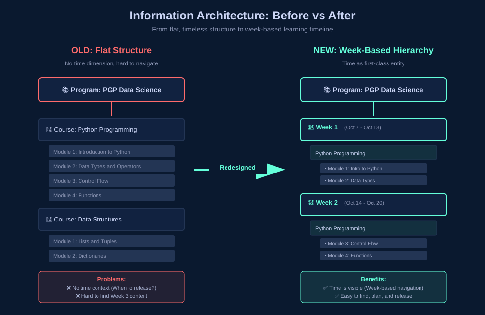
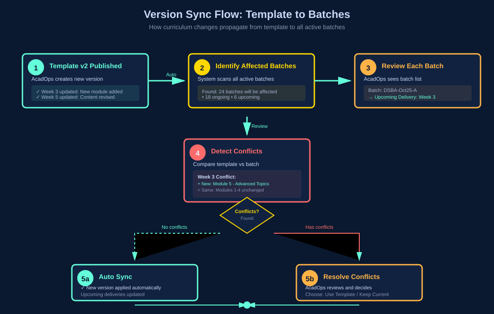
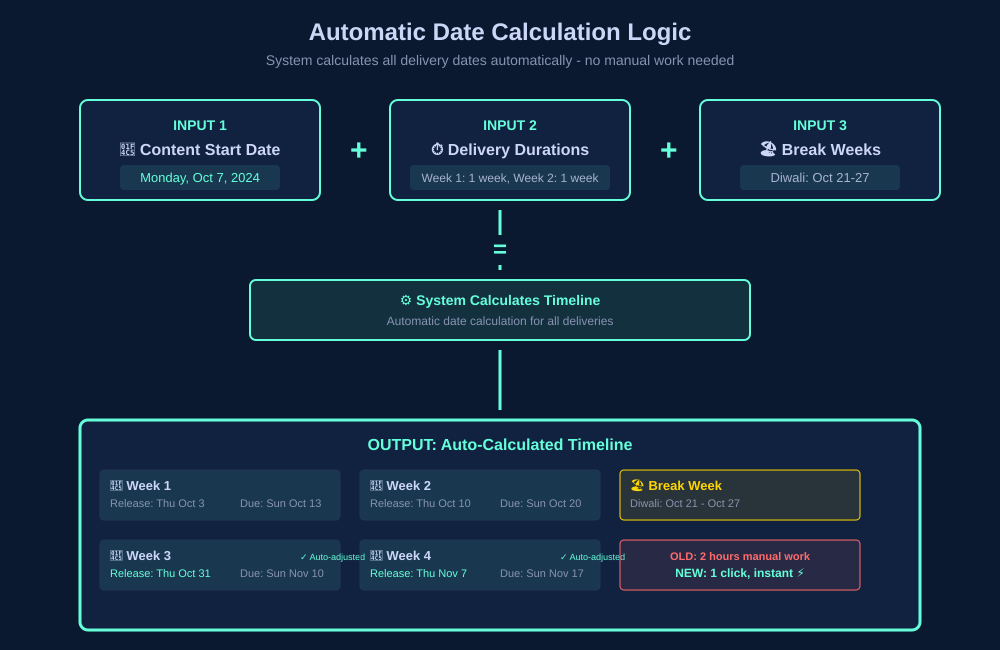

Content Delivery Automation
Week-Based Learning System — Reducing PM Workload from 1 Day to 0 Hours Per Week
Project Overview
- Role — Lead Product Designer (IC)
- Company — Great Learning
- Timeline — 6 months (May 2024 – Nov 2025)
- Team — 1 Designer, 3 Engineers, 1 PM, Academic Ops stakeholders
- Tools — Figma, User interviews, Workflow mapping, Stakeholder workshops
The Problem
Program Managers were spending 1 full day every week manually releasing content, coordinating with Academic Ops about curriculum changes, and dealing with version mismatches across batches.
The Solution
Automated delivery schedule system where Academic Ops creates a master plan once, and it automatically syncs to all batches with smart conflict resolution.
Impact at a Glance
1 day → 0 hrs
PM time on content release per week, per program manager
500+ PMs
Across programs benefiting from full automation
Zero errors
Content release errors from version mismatches (was 15%)
₹1.2Cr+
Annual savings in PM productivity across the organisation
340 → 0
Monthly support tickets for content release issues
100% adoption
Across all domestic programs within 6 months of launch
The Challenge
Through shadowing sessions with 15 PMs and 5 Academic Ops team members, I mapped their exhausting weekly routine. The problem wasn't just inefficiency — it was a system misaligned with how people actually think about content.
A PM's Weekly Schedule
- Monday — Follow-up: learner attendance, feedback scores, missing submissions
- Tuesday — Spillover from Monday: escalations, learner support
- Wednesday — Team meetings: reports, batch health, plan interventions
- Thursday — Content Release Day: 6–8 hours of manual work
- Friday — Plan next week's live sessions, coordinate with faculty
The Thursday Nightmare — 8 Steps Every Week
- Check with Academic Ops: "What content for this week?"
- Go to template batch, find modules for Week X
- Delete old modules from actual batch
- Import new modules from template (one by one)
- Set unlock dates (Thursday/Friday release)
- Set due dates (following Sunday)
- Release content to learners
- Post announcement in course
6–8 hours per PM managing 3–4 batches. Every. Single. Week.
Why Thursday/Friday release for Monday content?
Early finishers start over the weekend. Motivated learners don't wait until Monday. Reduces Monday support load. But managing this manually across programs with different release days created constant errors.
The Numbers Behind the Problem
Survey of 50+ PMs across a 500+ PM organisation:
PM Pain Points
- 85% — Thursday content release was their most time-consuming weekly task
- 92% — Had released wrong content at least once
- 68% — Spent additional time fixing version mismatch issues
- 73% — Struggled managing different release day configs across programs
- 100% — Wanted automation
Academic Ops Pain Points
- Every curriculum change required manually notifying 20+ PMs
- No visibility into which batches had received updates
- 2–3 hours/week answering PM coordination questions
- Excel-based delivery schedule had no system enforcement

Research & Discovery
Method 1: PM Shadowing (15 sessions)
Sat with PMs during their content release ritual. Observed, timed, and documented every step.
Insight 1: Week-Based Mental Model
"I think in weeks. Week 1 is Python basics, Week 2 is data structures. But the system doesn't work that way — I have to remember which modules are in which week."
— PM, Data Science
Insight 2: Template ≠ Reality
"The template changes, but I don't know when or what changed. I just copy everything on Thursday and hope it's right."
— Senior PM
Insight 3: Release Day Chaos
"My DSBA batch releases Thursday, AIML releases Friday. I have to remember which is which. One mistake and learners get confused."
— PM, multiple programs
Method 2: Academic Ops Workshops (5 sessions)
AcadOps had a clear mental model of the curriculum — programs by weeks, courses spanning weeks, modules grouped by week. But this structure existed only in Excel, not in the system.
Their pain: creating delivery schedules in spreadsheets, sharing with PMs manually, no system enforcement, curriculum changes = notification nightmare to 20+ PMs.
Method 3: Data Analysis (3 months of batch data)
2,400+
Manual content imports across 200 batches
340
Support tickets related to content release issues
15%
Of content releases had errors — wrong week, wrong modules
Design Process
Phase 1: Information Architecture — Week-Based Hierarchy (Weeks 1–3)
The core structural decision: introduce time as a first-class dimension in the content hierarchy.
Old: Flat Structure
Program → Course → Module
No time dimension. PMs had to mentally map modules to weeks.
New: Week-Based Hierarchy
Program → Delivery (Week 1, Week 2…) → Course → Module
Matches exactly how PMs and AcadOps think.

Why it worked: Aligns with how people think ("Week 3 content"). Makes delivery schedule visual and scannable. Enables bulk operations — shift all weeks, add a break week.
Phase 2: Template → Batch Sync Logic (Weeks 4–8)
The hardest design problem: how do you sync schedules when batches start at different times and have different break weeks?
❌ Version 1: Full plan sync
Copy entire delivery plan from template → batch. Problem: Batch-specific breaks got overwritten.
❌ Version 2: Manual merge
Show diff, let PM choose what to update. Problem: Too complex — PMs didn't understand the differences.
✅ Version 3: Additive sync with smart rules
Sync upcoming deliveries automatically. Published deliveries stay frozen. New content from template gets added to existing content. PM reviews before publishing.
Breakthrough from PM testing
"Oh! So it only updates the weeks I haven't released yet. That makes sense — I don't want to change what students already saw."
— PM during prototype testing


Phase 3: Break Week Management (Weeks 9–11)
PMs needed flexibility for local holidays without breaking the template sync. Two distinct break types solved this cleanly:
Learning Break (in template)
Built into the program structure by AcadOps. Part of the master plan — syncs to all batches.
Break Week (in batch)
Added locally by PM for Diwali, long weekends, etc. When added, system auto-adjusts all subsequent delivery dates.

Phase 4: Content Import Automation (Weeks 12–16)
Old flow — 7 steps
- Manually delete old modules
- Import from template (one by one)
- Set unlock dates
- Set due dates
- Publish to learners
- Write announcement
- Post in course
New flow — 1 step
Click "Sync & Publish" → done.
- Import content from template
- Set unlock date automatically
- Publish to learners
- Generate announcement (PM can edit)

Phase 5: Version Management (Weeks 17–20)
AcadOps creates multiple versions of the delivery plan in the template. Batches needed to know which version they were on and see exactly what changed.
Template Batch (AcadOps)
- Publish v2 of delivery plan
- System shows: "24 batches will be affected"
- Review each batch, resolve conflicts
- Confirm sync
Actual Batch (PM)
- Notification: "New version available from template"
- Click "Sync" on each upcoming delivery
- Visual diff: what changed?
- Confirm or keep current version

Key Design Decisions
1. Week-Based Organisation
Introduced Delivery as a first-class entity — a named week of learning with courses and modules inside it. This single structural decision unlocked everything else.


Template Batch


Impact: PMs think in weeks — UI matches. Easy to communicate dates. Bulk operations become possible (shift all weeks by 1, add break).
2. Additive Sync with Smart Rules
Rules:
- ✅ Sync upcoming deliveries automatically
- 🔒 Published deliveries stay frozen
- ➕ New content from template added to existing
- 👤 PM reviews before publishing
Visual language:
- Blue: New modules being added from template
- Existing modules remain untouched
- Single action: "Sync & Publish"
Why additive, not overwrite?
Safer — never removes content students may have started. Clearer — PMs see exactly what's new. Flexible — PMs can manually remove if needed.
Impact: Zero accidental content removal. Clear visibility. PMs stay in control of final publish.


3. Program-Level Release Day Configuration
Set once at program level (Thursday or Friday). All batches inherit this. System auto-calculates unlock dates, start dates, and due dates.
How it works
Release day
Thursday or Friday
Early access window for fast learners
Content start
Monday
Official start for all learners
Due date
Sunday
End of the learning week
Impact: No more manual date calculations per program. PMs don't need to remember which program releases which day.
4. Automatic Date Calculation
System auto-calculates all delivery dates from three inputs: content start date (set once), delivery durations (from template), and break weeks (added by PM).

Impact: Adding a break week = 1 click instead of 2 hours of recalculations. Date errors eliminated entirely.
5. "Sync & Publish" — One Action
Old flow had 7 steps across multiple screens. New flow: one button does everything — import, configure dates, publish, and generate announcement.


Impact: 6–8 hours → 5 minutes. Error-proof — can't forget a step. Announcement auto-generated from template.
6. Access Control Hierarchy
Clear permission model separating template (sacred) from batch (flexible).
| Action | AcadOps Lead | AcadOps Admin | PM |
|---|---|---|---|
| Edit template | ✓ | ✓ | ✗ |
| Publish template (create version) | ✓ | ✗ | ✗ |
| Edit batch & save | ✓ | ✓ | ✓ |
| Publish batch (release to learners) | ✓ | ✗ | ✗ |
Why: Prevents accidental changes while giving PMs flexibility for local adjustments.
Impact & Results
6 months post-launch across 500+ PMs.
PM Efficiency
100% time saved — 1 day → 0 hours per PM per week
3,000+ hours saved across 500 PMs per month
₹1.2Cr+ annual savings in PM productivity
Quality Improvements
0 content release errors (was 15%)
0 version mismatch incidents
340 → 0 support tickets for content release issues
Adoption
100% adoption across all domestic programs
95% PM satisfaction (up from 35%)
9/10 NPS from PMs
Academic Ops
Curriculum changes propagate in minutes (was hours/days)
100% visibility into which batches use which version
2–3 hrs/week saved on PM coordination
"I used to dread Thursdays. 6–8 hours of manual content release. Now I just click Sync & Publish and I'm done in 5 minutes. Life-changing."
— PM, Data Science Program
"The best part? I don't have to remember which program releases Thursday vs Friday. The system knows and handles it."
— Senior PM, managing 5 programs
"We can now update curriculum without worrying about PM coordination. The system handles it."
— AcadOps Lead
"Adding break weeks used to take 2 hours of date recalculations. Now it's one click and everything auto-adjusts."
— PM, Business Analytics
Challenges & Learnings
1. Designing for Two User Types
Problem: PMs and AcadOps had different needs and mental models.
Solution: Same underlying system, different interfaces — template batch is planning-focused (AcadOps), actual batch is execution-focused (PMs).
Learning: Don't force one interface for two workflows. Optimise each separately.
2. Sync Logic Complexity
Problem: So many edge cases — batch started mid-program, break weeks, curriculum changes mid-run.
Solution: Prototyped with 10 real batches covering every sync edge case. Iterated on conflict resolution UI 5 times.
Learning: Complex logic needs extensive testing with real scenarios, not hypotheticals.
3. Change Management
Problem: PMs were used to manual control. Would they trust automation?
Solution: Progressive rollout — Phase 1: template creation only. Phase 2: manual sync (PM triggers). Phase 3: auto-sync with conflict resolution.
Learning: Introduce automation gradually. Let users build trust before removing control.
4. Handling Exceptions
Problem: Every program had unique quirks — prework, optional courses, capstone weeks.
Solution: Flexible rules engine — tag course types (Regular, Optional, Capstone), different sync behaviour per type, override option for edge cases.
Learning: Design for the 80% case, but always provide escape hatches for the 20%.
Future Enhancements
Predictive Scheduling
AI suggests optimal delivery dates based on historical completion rates. Auto-adjust for low engagement weeks.
Learner Analytics Integration
See learner progress per delivery. Flag deliveries with low completion so PMs can intervene proactively.
Bulk Operations
Shift all deliveries by X days. Duplicate delivery schedule across programs. Batch-apply template updates.
Assessment Integration
Auto-schedule assessments based on content delivery. Due dates calculated from content unlock automatically.
Reflection
This was the most complex workflow automation I've designed.
Key takeaway: Complex automation isn't about removing humans from the loop — it's about removing repetitive work while keeping them in control of exceptions.
What Made It Successful
- User research depth — shadowed 20+ users before designing a single screen
- Stakeholder alignment — weekly syncs with AcadOps, PMs, and Engineering
- Iterative prototyping — tested 5 versions of sync logic with real data
- Phased rollout — built user trust gradually before full automation
Personal Growth
- Designing for multiple user types with competing needs
- Managing technical complexity without overwhelming users
- Change management for workflow automation
- Balancing flexibility with guardrails at enterprise scale
All metrics from Great Learning internal data (Nov 2025). 500+ PMs, 100% adoption, 1 day → 0 hours saved per PM per week.